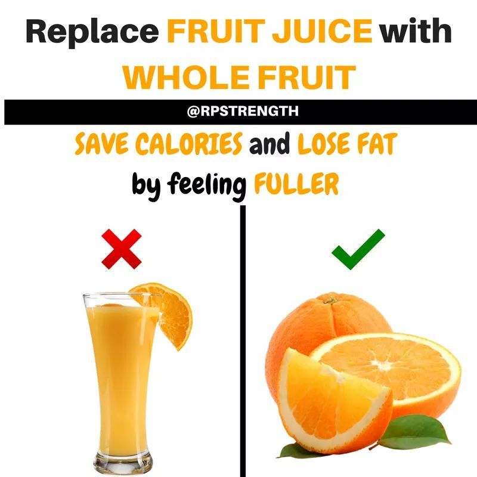

EAT YOUR FRUIT DON'T DRINK IT!
Fruit juice can harm your teeth.
We need to eat our fruit, not drink it. This is especially important for our children. While we like to think that fruit juice is a convenient way to get all the health benefits that fresh whole fruit provides, fruit juice delivers high levels of sugar and high levels of enamel-damaging acid. Whole fruit offers fiber and other nutrients that juice does not. Fruit juice can lead to cavities, weight gain, as well as unhealthy weight loss. Juice also can cause diarrhea when toddlers drink too much of it.

We recommend the following:
- When possible, mothers should breastfeed babies exclusively until six months of age and continue for a year or longer.
- Do not offer juice in a bottle or sippy cup. Toddlers and children should not carry cups or boxes of juice throughout the day. Never allow children to sleep with a bottle or sippy cup unless it contains only water.
Allowing children to have unrestricted access to juice through sippy cups and bottles creates a continuous supply of sugar and creates high acid levels in the mouth, which will lead to a much greater risk of decay.
This risk increases in terms of both higher amounts of decay and the speed at which the decay spreads.
- If you decide to include juice in your family's diet, buy products labeled as containing "100% juice." Drinks that are not 100% juice often include "drink," "beverage," or "cocktail" on the label. These drinks usually have added sugar and other ingredients.
- Serve juice that has been pasteurized. Unpasteurized juice can contain germs that put infants and children at risk of getting sick.